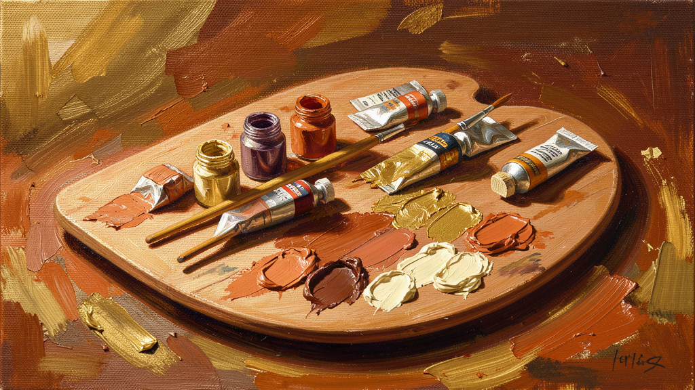
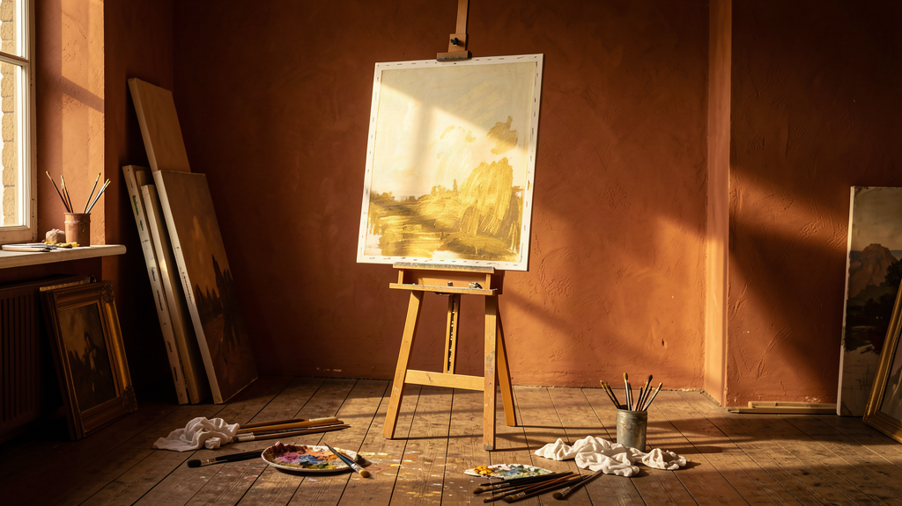
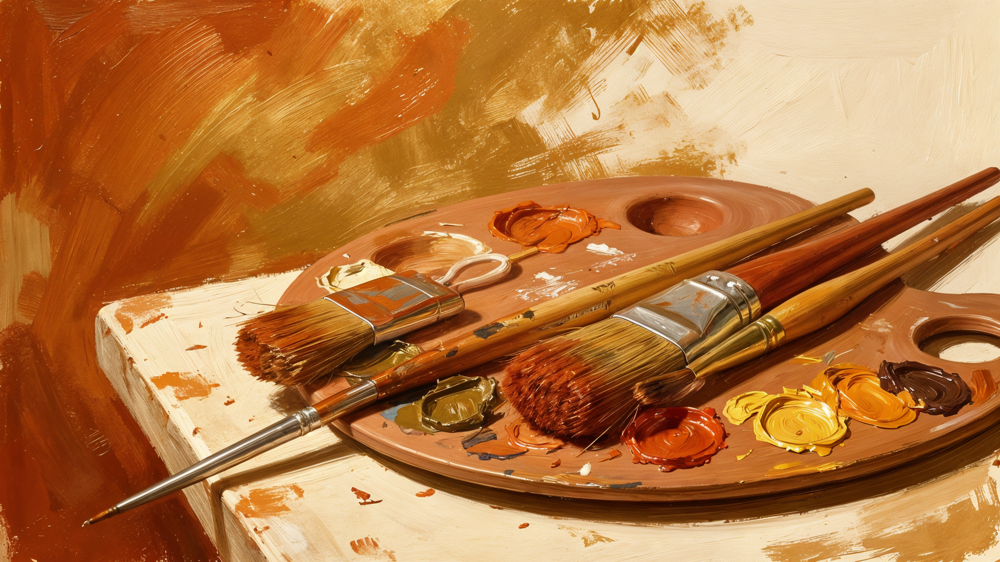
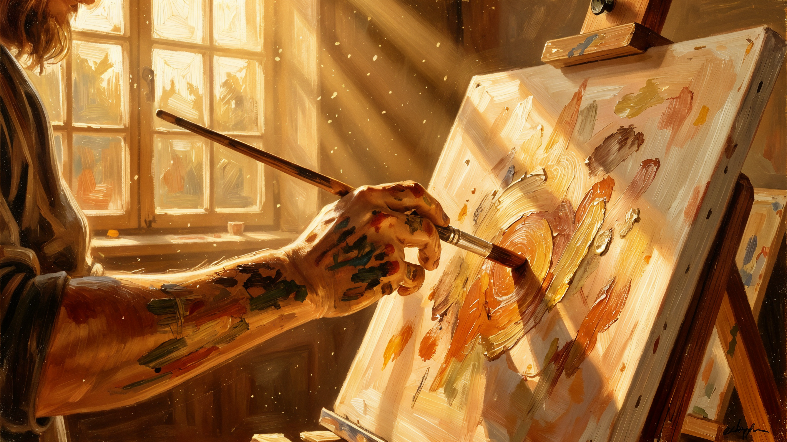
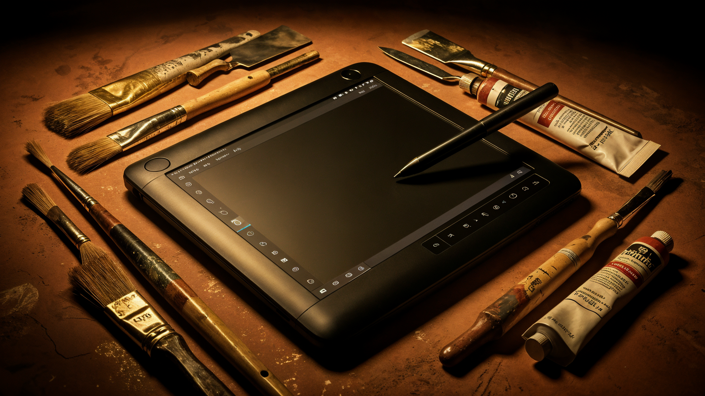
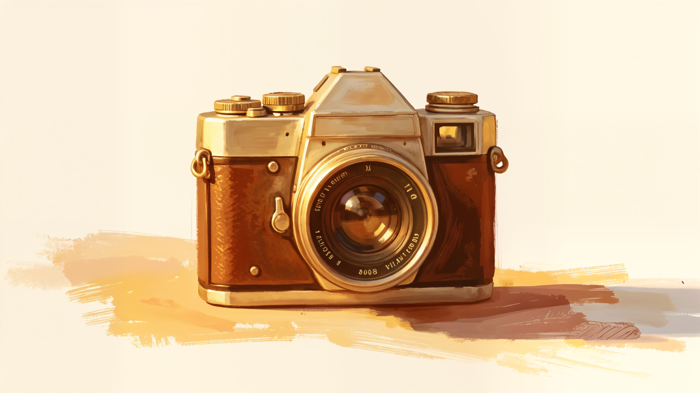
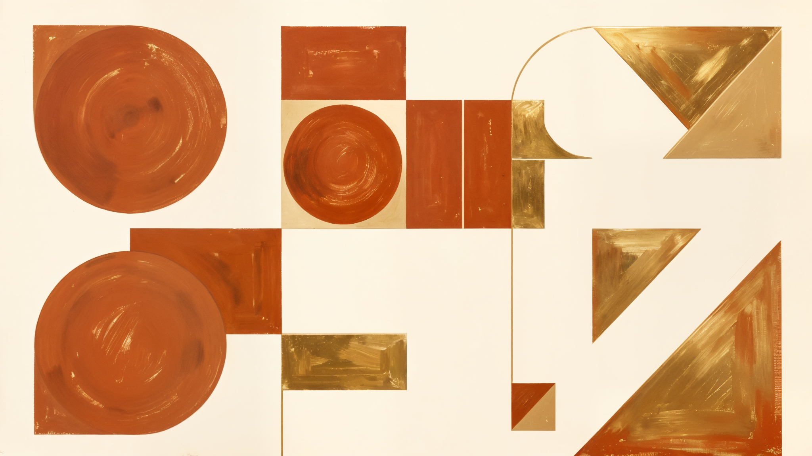
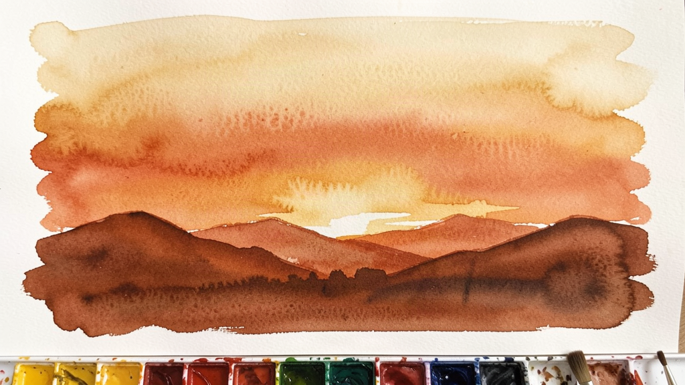
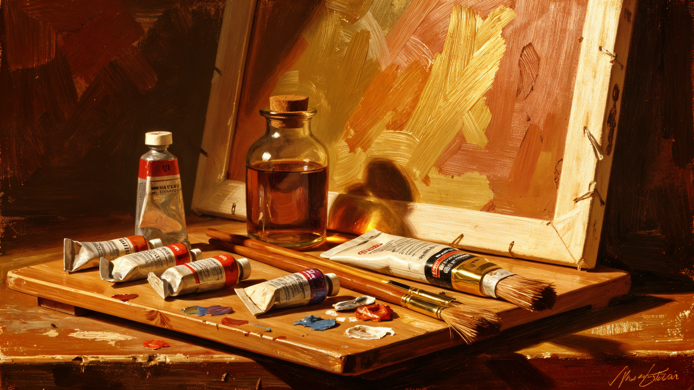

Why Impasto Never Really Went Away
The thick, tactile paint of the post-impressionists is having a quiet moment — and a new generation is finding freedom in the visible brushstroke.
After decades of conceptual dominance, a generation of artists is returning to the body — but with a new vocabulary. Inside the studios reshaping how we see the human form.
Read the story →

The Oaxacan sculptor works at a scale that demands the whole body. We spent a morning in her workshop watching forms emerge from raw earth — and from something older.

The thick, tactile paint of the post-impressionists is having a quiet moment — and a new generation is finding freedom in the visible brushstroke.

Once the domain of monuments, bronze is now being stretched, hollowed, and reinvented by artists who refuse to treat it as fixed.
Digital tools promised infinite control. So why are so many illustrators trading tablets for nibs, ink, and the risk of a line you can't undo?

The crowds always cluster around the same three rooms. Here are the quieter pavilions that deserved more attention — and the work we're still thinking about.

The conversation around digital art has moved past novelty. The interesting work now happens in the seam between pixels and matter.

They were directed to the looms rather than the architecture studios. A century later, their textile work is being recognized as some of the school's most radical output.

Sunsets are watercolor at its most forgiving and its most demanding. Seven techniques from wet-on-wet washes to salt texture that will transform your sky painting.

A working painter's guide to overlooked colors — from caput mortuum to Maya blue — and what they bring to a palette that cadmiums cannot.
Street art grew up. The new muralists aren't tagging — they're commissioning, and the walls they paint reshape how neighborhoods see themselves.
Not everything is meant to soothe. An argument for the paintings that resist, that refuse to be hung above the couch, and why that refusal matters now.
A new wave of ceramicists is asking what a pot is for when it isn't for holding anything. The answers are stranger — and more beautiful — than you'd expect.
Tools we reach for in the studio — from professional-grade watercolor sets to the brushes that make sunset washes sing.
Professional-grade pigments with exceptional granulation — perfect for sunset washes and atmospheric effects.
A versatile range of Kolinsky and squirrel-hair brushes for everything from fine detail to broad washes.
140lb / 300gsm archival paper with the tooth and texture that makes watercolor granulation come alive.
Opaque, matte-finish pigments that blend beautifully and dry to a velvety, lightfast finish.
This article contains affiliate links. If you purchase through these links, we may earn a commission at no extra cost to you. We only recommend products we genuinely believe in.
Brushed Past is part of a growing family of independent publications. Discover more from our sister sites: